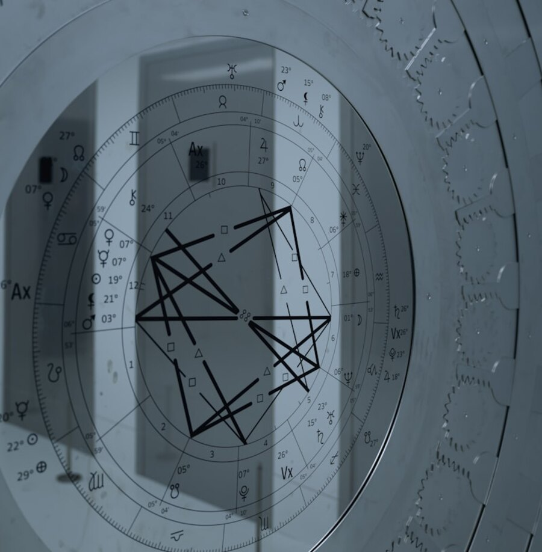

Кто вы по своей сути
Ваши Солнце, Луна и асцендент, то сочетание, что стоит за тем, как вы мыслите, что чувствуете и какое первое впечатление производите на других.
Ваша личная натальная карта, индивидуальный разбор онлайн: самая ясная точка, с которой стоит начать знакомство с астрологией.
Разбор натальной карты строится по точной дате, времени и месту вашего рождения. Он показывает положение Солнца, Луны и планет в тот момент, когда вы появились на свет, и превращает эту картину в портрет того, кто вы есть: ваш характер, ваши природные таланты, испытания, которые вас формируют, и то глубинное предназначение, что заложено в вашей карте. Это основа, на которой строится любой другой разбор.

Представьте натальную карту как снимок неба, сделанный из точного места вашего рождения в ту самую минуту, когда вы появились на свет. Двух одинаковых карт не бывает: даже у близнецов, рождённых с разницей в минуты, карты чуть-чуть, но различаются. Разбор натальной карты и есть работа по прочтению этого снимка: мы переводим Солнце, Луну, асцендент, планеты, дома и аспекты между ними на язык, который вы действительно сможете применить в жизни.
Если гороскоп на день обращается сразу к миллионам людей, то личный разбор натальной карты говорит только с вами. Дело не в предсказаниях и не в судьбе. Дело в понимании себя: в том, чтобы ясно увидеть свои сильные стороны, распознать повторяющиеся сценарии и принимать следующие решения чуть более осознанно и чуть более по-своему.
Чаще всего к своему первому разбору натальной карты человек приходит с тихим вопросом, спрятанным за очевидным: почему я снова и снова поступаю так? или зачем я вообще здесь? Разбор натальной карты не выдаст вам единственный аккуратный ответ, но он даст куда более ясную карту местности, а для большинства это и есть то, что меняет дело.
Один разбор, прочитанный как единое целое, ведь части карты обретают смысл только в связи друг с другом.
Ваши Солнце, Луна и асцендент, то сочетание, что стоит за тем, как вы мыслите, что чувствуете и какое первое впечатление производите на других.
То, что даётся вам легко: чаще всего это и есть те дары, которых вы не замечаете именно потому, что они кажутся чем-то само собой разумеющимся. И как на них опереться.
Точки напряжения и повторяющиеся сценарии в вашей карте, названные честно и поданные как грани для роста, а не изъяны, которые нужно исправлять.
Что вам нужно в отношениях, как вы даёте и принимаете нежность, и какие сценарии вы склонны повторять с самыми близкими людьми.
Направление, к которому склоняется ваша карта, то дело и тот вклад, что приносят ощущение смысла, а не просто занятости.
Большие ритмы, в которых вы родились, периоды вашей жизни и то, как распознать тот, через который вы проходите сейчас.
Не нужно осваивать никакие приложения и готовить что-либо, кроме данных рождения. Вот как всё проходит, от начала и до конца.
Напишите мне дату, время и место рождения и пару слов о том, что вас сейчас волнует. Всё останется конфиденциальным.
Ваша натальная карта рассчитывается точно и разбирается вручную, без автоматических генераторов, заранее, до вашей консультации.
Мы встречаемся онлайн, индивидуально. Ольга простым языком проводит вас по вашей карте, и вы можете спрашивать о чём угодно по ходу разговора.
Вы уйдёте с ясным пониманием своей карты и рекомендациями, к которым сможете возвращаться ещё долго после окончания консультации.
Сомневаетесь, подходит ли это вам? Расскажите Ольге о своей ситуации, и она честно подскажет, с чего лучше начать, даже если это будет другой разбор.

Каждый разбор натальной карты на этом сайте рассчитывает и интерпретирует сама Ольга, а не программа и не шаблон.
Ольга, профессиональный астролог, работает с каждым клиентом индивидуально. Её подход тёплый, но основательный: ясные, практичные рекомендации, рождённые из вашей уникальной натальной карты, всегда конфиденциальные и написанные именно для того человека, что сидит перед ней. С первого вашего сообщения и до самого разбора вы работаете напрямую с ней.
То, что чаще всего хотят узнать перед своим первым разбором.
Разбор натальной карты, его ещё называют разбором карты рождения, это личная индивидуальная консультация, на которой астролог интерпретирует карту неба в точный момент вашего рождения. Он описывает ваш характер, ваши природные таланты, ваши испытания и то глубинное предназначение, что заложено в вашей карте, и эти рекомендации рассчитаны только для вас, это никогда не безликий гороскоп.
Гороскоп на день пишется для всех, кто родился под одним знаком Солнца, для миллионов людей сразу. Разбор натальной карты строится только по вашим точным дате, времени и месту рождения, поэтому он отражает уникальное сочетание Солнца, Луны, асцендента, планет и домов, которое принадлежит именно вам. Результат получается конкретным, личным и куда более полезным.
Три вещи: дата рождения, время рождения (как можно точнее) и место рождения. По ним Ольга точно рассчитает вашу натальную карту до консультации. Всё, чем вы делитесь, остаётся личным и конфиденциальным.
Даже приблизительное время позволяет содержательно разобрать ваши Солнце, Луну и планеты. Если вам нужна полная точность, которую требуют дома и асцендент, Ольга предлагает ректификацию времени рождения, она восстанавливает неизвестное время рождения по реальным событиям вашей жизни.
Разбор вашей натальной карты проходит онлайн как личная индивидуальная консультация, где бы вы ни находились, и вы можете задавать вопросы на протяжении всей встречи. Консультации идут без спешки, а разбор остаётся с вами, и к нему можно возвращаться. Напишите мне, и Ольга согласует удобные вам формат и время.
Совсем не нужны. Ольга всё объясняет простым, понятным языком, будь это ваш самый первый разбор или вы уже хорошо знаете свою карту. Вы приносите свои вопросы, она приносит интерпретацию.
Когда вы поняли саму карту, это естественные следующие шаги.
Ваша карта в движении: темы, возможности и зоны напряжения предстоящего года и время для действий.
ПодробнееКак ваша карта встречается с чужой: притяжение, гармония и трения, для любой близкой связи.
ПодробнееВаше призвание и таланты: профессиональное направление, к которому склоняется ваша натальная карта.
ПодробнееНе знаете точное время рождения? Мы восстановим его по реальным событиям жизни, чтобы ваша карта была точной.
ПодробнееПоделитесь данными рождения и немного расскажите о том, что вас волнует. Ваш разбор личный, конфиденциальный и проходит онлайн, где бы вы ни находились.
Записаться на разбор Все консультации